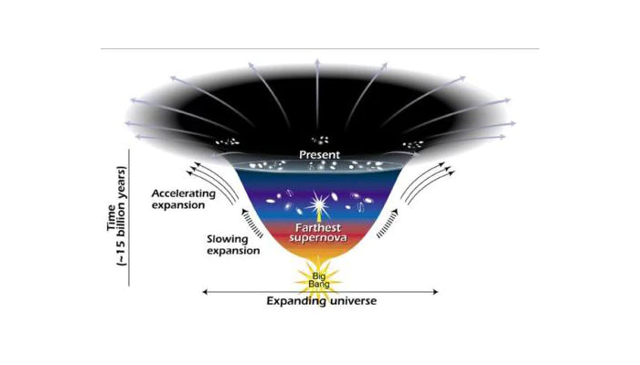

စက်တင်ဘာ ၁၅ ရက်နေ့ထုတ် Physical Review D သုတေသန ဂျာနယ်ကြီးမှာပါတဲ့ သုတေသန စာတမ်းအရဆို သိပ္ပံပညာရှင်တွေဟာ ဒီ Dark Energy အမှောင်စွမ်းအားကို ကမ္ဘာမြေပေါ်မှာတင် ရှာဖွေတွေ့ရှိကောင်း တွေ့ရှိခဲ့ပြီး ဖြစ်နိုင်တယ် ဆိုပါတယ်။
ဒီစာတမ်းမှာ သုတေသီတွေက ဒီ dark energy ရဲ့ အရိပ်အယောင်တွေကို အီတလီနိုင်ငံက ဂရန်းစက်ဆို အမျိုးသား ဓါတ်ခွဲခန်း (Italian Gran Sasso National Laboratory) မှာ ပြုလုပ်တဲ့ dark matter အမှောင်ဒြပ် ရှာဖွေစမ်းသပ်မှု သုတေသနအတွင်း တွေ့ရှိခဲ့ရတယ်လို့ ဆိုပါတယ်။
ဒီစာတမ်းကို ရေးသားတဲ့ အထဲမှာ ပါဝင်သူ အများစုက theoretical physicists လို့ခေါ်တဲ့ သီအိုရီတွေ တွေးခေါ်တဲ့ ရူပဗေဒ ပညာရှင်တွေ ဖြစ်ပါတယ်။ သူတို့က မူလ ဒီစမ်းသပ်မှု ပြုလုပ်ခဲ့စဉ်က ပါဝင်ခဲ့သူတွေ မဟုတ်ပါဘူး။ မူလ ပညာရှင်တွေက ဒီစမ်းသပ်မှုကနေ ရရှိလာတဲ့ အချက်အလက်တွေကနေ ကောက်ချက်ဆွဲနိုင်ဖို့ ကြိုးစားရာမှာ မအောင်မြင်တာနဲ့ ဒီစမ်းသပ်မှုနဲ့ သက်ဆိုင်ခြင်း မရှိတဲ့ ပညာရှင်တွေကို ခေါ်ယူပြီး ကောက်ချက်ဆွဲပေးဖို့ တာဝန်ပေးခဲ့တာ ဖြစ်ပါတယ်။
ဒီ ပညာရှင်တွေက XENON1T အမှောင်စွမ်းအင် သုတေသနက ရရှိလာတဲ့ အချက်အလက်တွေကို ခွဲခြမ်းစိတ်ဖြာပြီး အဖြေရှာဖို့ ကြိုးစားခဲ့ ကြပါတယ်။ ဒီ စမ်းသပ်မှုက Dark Matter အမှောင်ဒြပ်မှုန် လေးတွေနဲ့ ဇီနွန် ဓါတ်ငွေ့ အက်တမ်တွေ အကြား ဖြစ်လာတဲ့ အပြန်အလှန် သက်ရောက်မှုတွေကို ရှာဖွေထောက်လှမ်းမယ့် စမ်းသပ်မှု ဖြစ်ပါတယ်။
အမှောင်စွမ်းအင်ကို တိုက်ရိုက် ရှာတွေ့နိုင်ခြေက တကယ်တော့ အတော်လေးကို နည်းတာပါလို့ ဒီစာတမ်းကို ရေးသားရာမှာ ပါဝင်သူ တဦးဖြစ်တဲ့ ဟာဝိုင်ယီ တက္ကသိုလ်က လက်ထောက်ပါမောက္ခ ဂျယ်ရမီ စက်စတိန်း (Jeremy Sakstein) က ပြောပါတယ်။
“အခုရှာဖွေတွေ့ရှိမှုအတွက် အခြား ဖြစ်နိုင်ခြေတွေလဲ ရှိပါသေးတယ်။ အခုတွေ့ရှိချက်က သုတေသနတွေမှာ ရံဖန်ရံခါ ဖြစ်တတ်တဲ့ မတော်တဆ အကြောင်းတိုက်ဆိုင်မှု တခုလား ဆိုတာလဲ မပြောနိုင်ပါဘူး” လို့ သူက ဆက်ပြောပါတယ်။
သင်္ချာသဘောအရ ပြောရရင် အခုရှာဖွေတွေ့ရှိမှုဟာ မတော်တဆ မှားယွင်းမှု တခုဖြစ်ဖို့ အခွင့်အလမ်းက ၅% တောင်မှ ရှိပါတယ်။ နှိုင်းယှဉ်ရရင် ၂၀၁၂ တုန်းက Higgs Boson ရှာဖွေတွေ့ရှိခဲ့စဉ်က မှားနိုင်ခြေက အပုံ ၃.၅ သန်းပုံမှ တပုံပဲ ရှိပါတယ်။ ပြောရရင်တော့ အခုတွေ့ရှိချက်က သိပ်တော့ ခိုင်မာမှု မရှိလှပါဘူး။ ဒါ့ကြောင့်လဲ တင်ပြတဲ့ သုတေသီတွေက “တွေ့ကောင်းတွေ့နိုင်ခဲ့တယ်” ဆိုတဲ့ စကားလုံးကို သုံးတာ ဖြစ်ပါတယ်။
ဒါပေမယ့် အကယ်လို့သာ ဒီတွေ့ရှိချက်က မှန်ကန်ခဲ့မယ် ဆိုရင်တော့ ဒါဟာ အမှောင်စွမ်းအင်ကို ပထမဆုံး ရှာဖွေတွေ့ရှိမှုလို့ ပြောလို့ရပါတယ်။
“တကယ်သာ မှန်ခဲ့မယ်ဆို ဒါဟာ အလွန်ကြီးမားတဲ့ တွေ့ရှိမှုကြီး တစ်ရပ်ဖြစ်ပါတယ်” လို့ ကာလီဖိုးနီးယား တက္ကသိုလ် (ဘာကလေ) က နက္ခတ်ပညာရှင် အဲလက်ဆီ ဖိလစ်ပင်ကို (Alexei Filippenko) ကပြောပါတယ်။ “ဒါပေမယ့် မှန်မမှန် ဆိုတာ သေချာအောင် နောက်ထပ် စမ်းသပ်မှုတွေ အများကြီး လုပ်ဖို့ လိုပါသေးတယ်” လို့တော့သူက ဆက်ပြောပါတယ်။
Dark Energy ဆိုတာဘာလဲ
ဒီ ထူးဆန်းတဲ့ အမှောင်စွမ်းအား ဆိုတာ ဘာလဲ။ ဒီ အမှောင်စွမ်းအား ဆိုတာ တကယ်တော့ ရူပဗေဒ ပညာရှင်တွေရဲ့ မှန်းဆချက် တရပ်ပဲ ဖြစ်ပါတယ်။ ၁၉၉၀ ပြည့်လွန်နှစ်တွေမှာ စကြာဝဠာကြီးရဲ့ ပြန့်ကားနှုန်းဟာ မူလက ထင်ထားခဲ့သလို တဖြည်းဖြည်း နှေးလာနေတာ မဟုတ်ပဲ တဖြည်းဖြည်း မြန်လာတယ် ဆိုတာကို မမျှော်လင့်ပဲ တွေ့ရှိခဲ့ကြပါတယ်။ တကယ်ဆို စကြာဝဠာထဲမှာ ရှိနေတဲ့ ဂလက်ဆီတွေ၊ ကြယ်တွေရဲ့ အချင်းချင်း ဆွဲအားကြောင့် စကြာဝဠာရဲ့ ပြန့်ကားနှုန်းဟာ နှေးလာရမှာ ဖြစ်ပါတယ်။ ဥပမာ ကောင်းကင်ပေါ် ပစ်တင်လိုက်တဲ့ ကျောက်ခဲ တစ်လုံးဟာ တဖြည်းဖြည်းနှေးသွားပြီး ပြန်ကျလာ သလိုပေါ့။ဒါပေမယ့် တကယ်တမ်း တွက်ချက်ကြည့်လိုက်တဲ့ အခါမှာတော့ စကြာဝဠာကြီးရဲ့ ပြန့်ကားနှုန်းဟာ တဖြည်းဖြည်း နှေးလာနေတာ မဟုတ်ပဲ တဖြည်းဖြည်း ပိုပြီး ပိုပြီး မြန်လာနေတယ် ဆိုတာကို အံ့ဩဖွယ် တွေ့ရှိခဲ့ ရပါတယ်။ ဆိုလိုတာ ကျွန်တော်တို့ရဲ့ ဂလက်ဆီကြီးဟာ အခြားသော ဂလက်ဆီတွေနဲ့ ဝေးရာကို အရှိန်နဲ့ ပြေးထွက်နေတာပါ။ ဒီလို ဂလက်ဆီတွေ တခုနဲ့ တခု ဝေးကွာသွားတဲ့ နှုန်းကလဲ တဖြည်းဖြည်း ပိုပြီး မြန်လို့လာနေပါတယ်။

ရူပဗေဒ ပညာရှင်တွေက စကြာဝဠာကြီးထဲမှာ ဒီ Dark Energy အမှောင်စွမ်းအင်တွေနဲ့ ပြည့်နေတယ်လို့ တွေးဆကြပါတယ်။ (ဒီနေရာမှာ Dark Matter အမှောင်ဒြပ်နဲ့ Dark Energy အမှောင်စွမ်းအင် မမှားဖို့ လိုပါတယ်။ အမှောင်ဒြပ်က ဒြပ်ရှိတဲ့ အရာဝတ္ထုဖြစ်ပြီး သူ့ကိုတိုက်ရိုက် မတွေ့နိုင်ပေမယ့် သူ့ရဲ့ ဆွဲငင်အား သက်ရောက်မှုကိုတော့ တိုက်ရိုက် တိုင်းတာလို့ ရပါတယ်။ အခု အမှောင်စွမ်းအင်က တွန်းကန်အားကို ဖြစ်စေတဲ့ အရာတွေ ဖြစ်ပါတယ်)
ဒီ စကြာဝဠာ ဟင်းလင်းပြင်ထဲ ပြည့်နေတဲ့ အမှောင်စွမ်းအင်တွေဟာ အနှုတ်ဖိအား (Negative pressure) ရှိတယ်လို့ ယူဆကြပါတယ်။ သဘောကတော့ သူတို့က ဒြပ်ရှိတဲ့ အရာတွေကြားမှာ ဝင်နေပြီး ဒီ ဒြပ်ဝတ္ထုတွေ တခုနဲ့တခု ဝေးသထက် ဝေးသွားအောင် တွန်းပေးနေတဲ့ အားပဲ ဖြစ်ပါတယ်။ ဒီအားကြောင့် စကြာဝဠာကြီးဟာ လေထိုးထားတဲ့ ပူပေါင်းကြီး တစ်ခုလို တဖြည်းဖြည်း ကားထွက်လာတာလို့ ယူဆကြပါတယ်။
သိပ္ပံပညာရှင်တွေက စကြာဝဠာကြီး တစ်ခုလုံးမှာ ရှိတဲ့ ဒြပ်ထုအားလုံးရဲ့ ၆၈ ရာနှုန်းဟာ ဒီ အမှောင်စွမ်းအား ဖြစ်တယ်လို့ ယုံကြည်ကြပါတယ်။ ဒီ ပမာဏဟာ စကြာဝဠာကြီး ကြီးလာလေလေ ပိုများလာလေလေပဲ ဖြစ်ပါတယ်။ နောက်တခုက ဒီ အမှောင်စွမ်းအားဟာ ဆွဲငင်အား (gravity) နဲ့လဲ သိပ်ပြီး အခြင်းခြင်း အပြန်အလှန် အားသက်ရောက်မှု ရှိဟန် မတူပါဘူး။
စကြာဝဠာရဲ့ ၂၇ ရာနှုန်းက အမှောင်ဒြပ် (Dark Matter) လို့ ယူဆပါတယ်။ ဒီ အမှောင်ဒြပ်က အပေါ်မှာ ပြောခဲ့သလိုပဲ အမှောင်စွမ်းအင်နဲ့ ဘာမှ မဆိုင်ပါဘူး။ ဒီ အမှောင်ဒြပ်က လက်ရှိ ရှာဖွေ မတွေ့ရသေးတဲ့ ဒြပ်စင် တမျိုးမျိုးလဲ ဖြစ်နိုင်ပါတယ်။ ဒါမှမဟုတ် လက်ရှိအထိ ရှာမတွေ့သေးတဲ့ အမှုန်တွေနဲ့ ပြုလုပ်ထားတဲ့ အရာဝတ္ထုတွေလဲ ဖြစ်နိုင်ပါတယ်။
ပုံမှန် အရာဝတ္ထုတွေကတော့ စကြာဝဠာရဲ့ ဒြပ်ထု စုစုပေါင်းရဲ့ ၅ ရာခိုင်နှုန်းပဲ ရှိပါတယ်။ ဒီအထဲမှာ ကြယ်တွေ၊ ဂြိုလ်တွေနဲ့ ဓါတ်ငွေ့တိမ်တိုက်တွေ ပါဝင်ပါတယ်။ ပုံမှန် အရာဝတ္ထုတွေရော အမှောင်ဒြပ်ထုတွေရောက ဆွဲငင်အားရဲ့ သက်ရောက်မှုကို ခံကြရပါသလို သူတို့ကလဲ အခြားအရာဝတ္ထုတွေ အပေါ် ဆွဲငင်အား သက်ရောက်ပါတယ်။
အခုထိ ဒီ Dark Energy နဲ့ ပါတ်သက်တဲ့ သီအိုရီပေါင်း မြောက်များစွာ ထွက်ပေါ်လာပြီးပါပြီ။ ခက်တာက အဲ့သည် သီအိုရီတွေကို စမ်းသပ်ဖို့ ဒီ Dark Energy ဆိုတာကို ဘယ်လို တိုင်းတာရမလဲဆိုတာကိုတောင် သိပ္ပံပညာရှင်တွေ စဉ်းစားလို့ မရခဲ့ပါဘူး။
ဒီ ဓါတ်ခွဲခန်းကြီးက ဒီ အမှောင်စွမ်းအင် သီအိုရီ မြောက်များစွာထဲက သီအိုရီ တစ်ခုကို စမ်းသပ်ကြည့်တာ ဖြစ်ပါတယ်။ သူတို့စမ်းသပ်တဲ့ သီအိုရီကတော့ ခမယ်လီယွန် အမှုန် (chameleon particles) တွေနဲ့ သက်ဆိုင်တဲ့ သီအိုရီကို ရွေးချယ်ပြီး စမ်းသပ်တာပါ။ (ဒီအမှုန်ကလဲ စိတ်ကူးထဲက မှန်းဆချက် တရပ်အဆင့်မှာပဲ ရှိပါသေးတယ်)။
ဘယ်လို စမ်းသပ်ခဲ့သလဲ
ပြီးခဲ့တဲ့ ၂၀၂၀ ဇွန်လအတွင်းမှာ ဒီ XENON သုတေသန အဖွဲ့ကနေပြီး သူတို့ရဲ့ စမ်းသပ်မှုအတွင်းမှာ အီလက်ထရွန်တွေနဲ့ စမ်းသပ်ဓါတ်မှုန်တွေအကြား ထိတွေ့မှုတွေဟာ သူတို့မှန်းထားတာထက် ပိုပြီး များနေတယ်လို့ ထုတ်ပြန်ကျေညာ ခဲ့ပါတယ်။ပညာရှင်တွေအကြားမှာ ဘာ့ကြောင့် ဒီလို ထိတွေ့မှုတွေ ထင်တာထက် ပိုများနေလဲ ဆိုတာ အမျိုးမျိုး ကြံဆကြပါတယ်။ အချို့က သုတေသနတွေမှာ ဖြစ်လေ့ဖြစ်ထရှိတဲ့ မတော်တဆ အကြောင်းတိုက်ဆိုင်မှုလားလို့ သံသယ ဖြစ်ကြပါတယ်။ အချို့ကလဲ Solar Axions လို့ခေါ်တဲ့ နေရဲ့အထဲမှာ ဖြစ်တဲ့ dark matter အမှုန်တွေကြောင့်လို့ ဆိုပါတယ် (ဒီအမှုန်တွေကလဲ အခုထိ တွေးဆချက်ပဲ ရှိပါသေးတယ်)။ ဒါပေမယ့် အခုထိ ဒီ Solar Axions အမှောင်ဒြပ်တွေဟာ နေထဲမှာ ဖြစ်တယ်ဆိုတဲ့ အထောက်အထား ရှာမတွေ့သေးပါဘူး။ ပြီးတော့ အခုထိ ကြယ်တွေကို လေ့လာခဲ့မှုအရဆို ဒီ solar axions တွေ ဖြစ်လာဖို့ဆိုတာက အတော်လေးတော့ ခဲယဉ်းပါတယ်။
Sakstein နဲ့ သူ့အဖွဲ့သား များကတော့ ဒီကိစ္စကို တမျိုးမြင်ပါတယ်။ သူတို့က အခုစမ်းသပ်မှုက chameleon particles ကို ရှာဖွေတွေ့ရှိခဲ့တာ ဖြစ်နိုင်တယ်လို့ ဆိုပါတယ်။ ဒီအမှုန်က အမှောင်စွမ်းအင်ရဲ့ ပုံစံတမျိုးဖြစ်ပြီး နေထဲမှာ ဖန်တီးဖြစ်ပေါ်တယ်လို့ ယူဆကြတာပါ။ ဒီ အမှုန်လေးတွေဟာ အခု စမ်းသပ်မှု ပြုလုပ်တဲ့ ဓါတ်ပေါင်းဖို အတွင်းမှာ အခြား ပုံမှန် ဒြပ်ပစ္စည်းတွေနဲ့ အပြန်အလှန် သက်ရောက်မှု ရှိနိုင်မယ်လို့ ဆိုပါတယ်။
Chameleon သီအိုရီဟာ အမှောင်စွမ်းအင်နဲ့ ပါတ်သက်တဲ့ မြောက်များလှစွာသော သီအိုရီတွေ အထဲက တစ်ခုပဲ ဖြစ်ပါတယ်။ အကယ်လို့ အခု စမ်းသပ်မှုအတွင်း တွေ့ရှိမှုတွေဟာ ဒီ ခမယ်လီယွန် အမှုန်တွေကြောင့်သာဆိုရင် နောက်ထပ် အမှောင်စွမ်းအင် ရှာဖွေရေး သုတေသနတွေအတွက် လမ်းစပွင့်သွားစေမှာ ဖြစ်ပါတယ်။
နောက်ဘာဆက်လုပ်ကြမလဲ
Sakstein က ပြောတာက အခုစာတမ်းက ဖြစ်နိုင်ခြေ တခုကို တင်ပြတာပဲ ဖြစ်ပါတယ်။ ဒါ့ကြောင့် နောက်အဆင့် အနေနဲ့ ဒီတင်ပြချက် မဟုတ်ဘူး ဆိုတာကို သက်သေပြနိုင်ဖို့ အခြား အလားတူ သုတေသနေတွေမှာရော ဒီလို တွေ့ရှိချက်တွေ တွေ့ရှိရသလားဆိုတာ ရှာကြည့်ဖို့ လိုပါတယ်။ (မှတ်ချက် – သိပ္ပံမှာ သီအိုရီ တစ်ခုကို မှန်တယ်ဆိုတာ ပြဖို့ ဒီသီအိုရီဟာ မှားတယ် ဆိုတဲ့ အနေကနေ စစဉ်းစားရပါတယ်။ ပြီးတော့ ဒီ သီအိုရီ မှားကြောင်း အထောက်အထား ရှာပါတယ်။ ဒီသီအိုရီ မှားကြောင်း အထောက်အထား တစ်ခုလောက် တွေ့တာနဲ့ အဲ့သည် သီအိုရီ ပျက်ပျယ်သွားပါတော့တယ်။ ဒါက သိပ္ပံ သုတေသနေတွေ လုပ်တဲ့ လုပ်ထုံးပါ)။သုတေသီတွေကတော့ လက်ရှိ စတင်စမ်းသပ်နေတဲ့ တရုတ်ပြည်က PandaX-4t သုတေသနနဲ့ အမေရိကန် စွမ်းအင်ဝန်ကြီးဌာနရဲ့ LUX-Zeplin သုတေသန တွေကနေ အချက်အလက် အသစ်တွေ ထွက်လာနိုင်မယ်လို့ မျှော်လင့်နေ ကြပါတယ်။
“စိတ်လှုပ်ရှားစရာ အကောင်းဆုံး အချက်ကတော့ အခုဆို ကျွန်တော်တို့ စမ်းသပ်မှု တစ်ခုမှာ တွေ့ရှိရတဲ့ တွေ့ရှိမှုတွေကို အခြေခံပြီး အခြား သုတေသနေတွေမှာ ဘယ်လိုအရာမျိုးကို ရှာရမလဲ ဆိုတဲ့ အိုင်ဒီယာ ရလာတာပဲ ဖြစ်ပါတယ်။ အခုဆို ကျွန်တော်တို့ ဘာကို ကြည့်ရမလဲ ဆိုတာကို နားလည်စ ပြုလာပါပြီ” လို့ Sakstein က ပြောပါတယ်။
Reference:
A PHYSICS EXPERIMENT MAY HAVE UNEXPECTEDLY DETECTED DARK ENERGY ON EARTH | Inverse
Dark Energy